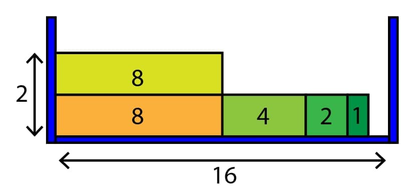

codeforces-round711-div2
codeforces 711 div2 题解
题目链接：http://codeforces.com/contest/1498
A题
题面
The gcdSum of a positive integer is the gcd of that integer with its sum of digits. Formally, $𝑔𝑐𝑑𝑆𝑢𝑚(𝑥)=𝑔𝑐𝑑(𝑥,\ sum\ of\ digits\ of\ 𝑥)$ for a positive integer $x$. $gcd(a,b)$ denotes the greatest common divisor of 𝑎 and b — the largest integer $d$ such that both integers 𝑎 and 𝑏 are divisible by d.
For example: $𝑔𝑐𝑑𝑆𝑢𝑚(762)=𝑔𝑐𝑑(762,7+6+2)=𝑔𝑐𝑑(762,15)=3.$
Given an integer $n$, find the smallest integer $𝑥 \geq 𝑛$ such that $𝑔𝑐𝑑𝑆𝑢𝑚(𝑥)\gt1$.
Input
The first line of input contains one integer $t (1 \leq t \leq 10^4)$ — the number of test cases.
Then $t$ lines follow, each containing a single integer $n \ (1 \leq 𝑛 \leq10^{18})$.
All test cases in one test are different.
Output
Output $t$ lines, where the 𝑖-th line is a single integer containing the answer to the $i$-th test case.
Example
$input$
3
11
31
75
$output$
12
33
75
Note
Let us explain the three test cases in the sample.
Test case 1: 𝑛=11:
$𝑔𝑐𝑑𝑆𝑢𝑚(11)=𝑔𝑐𝑑(11,1+1)=𝑔𝑐𝑑(11, 2)=11.$
$𝑔𝑐𝑑𝑆𝑢𝑚(12)=𝑔𝑐𝑑(12,1+2)=𝑔𝑐𝑑(12, 3)=3.$
So the smallest number $\geq 11$ whose gcdSum $\gt1$ is 12.
Test case 2: 𝑛=31:
$𝑔𝑐𝑑𝑆𝑢𝑚(31)=𝑔𝑐𝑑(31,3+1)=𝑔𝑐𝑑(31, 4)=1.$
$𝑔𝑐𝑑𝑆𝑢𝑚(32)=𝑔𝑐𝑑(32,3+2)=𝑔𝑐𝑑(32, 5)=1.$
$𝑔𝑐𝑑𝑆𝑢𝑚(33)=𝑔𝑐𝑑(33,3+3)=𝑔𝑐𝑑(33, 6)=3.$
So the smallest number $\geq 3$ whose 𝑔𝑐𝑑𝑆𝑢𝑚 $\gt1$ is 33.
Test case 3: 𝑛=75 :
$𝑔𝑐𝑑𝑆𝑢𝑚(75)=𝑔𝑐𝑑(75,7+5)=𝑔𝑐𝑑(75, 12)=3.$
The gcdSum of 75 is already $\gt1$. Hence, it is the answer.
题意
定义$gcdSum(N) = gcd(N, N的数位和)$，求最小的$x$，要求 $x \geq N$并且$gcdSum(x) \gt 1$
code
#include <bits/stdc++.h>
#define ll long long
using namespace std;
const int MAXN = 1e5+10;
ll gcd(ll a, ll b) {
return a%b==0?b:gcd(b, a%b);
}
inline ll getNum(ll n) {
ll sum = 0;
ll temp = n;
while(temp) {
sum+=temp%10;
temp/=10;
}
return gcd(sum, n);
}
void solve() {
ll N;
cin>>N;
for(ll i=N;;i++) {
if(getNum(i) != 1) {
cout<<i<<endl;
return;
}
}
}
int main() {
int T;
cin>>T;
while(T--) {
solve();
}
return 0;
}
B题
题面
You are given n rectangles, each of height 1. Each rectangle’s width is a power of 2$ ($i. e. it can be represented as $2^x$ for some non-negative integer $x)$.
You are also given a two-dimensional box of width $W$. Note that $W$ may or may not be a power of 2. Moreover, $W$ is at least as large as the width of the largest rectangle.
You have to find the smallest height of this box, such that it is able to fit all the given rectangles. It is allowed to have some empty space left in this box after fitting all the rectangles.
You cannot rotate the given rectangles to make them fit into the box. Moreover, any two distinct rectangles must not overlap, i. e., any two distinct rectangles must have zero intersection area.
See notes for visual explanation of sample input.
Input
The first line of input contains one integer $t\ (1 \leq t \leq 5·10^3)$— the number of test cases. Each test case consists of two lines.
For each test case:
- the first line contains two integers $n\ (1 \leq 𝑛 \leq 10^5)$ and $W (1 \leq W \leq 10^9);$
- the second line contains $n$ integers $w_1, w_2, …, w_n (1 \leq w_i \leq 10^6)$ , where $w_i$ is the width of the i-th rectangle. Each $w_i$ is a power of $2$;
- additionally, $\max_{i=1}^n w_i\leq W$.
The sum of $n$ over all test cases does not exceed $10^5$.
Output
Output $t$ integers. The i-th integer should be equal to the answer to the i-th test case — the smallest height of the box.
Example
$input$
2
5 16
1 2 8 4 8
6 10
2 8 8 2 2 8
$output$
2
3
Note
For the first test case in the sample input, the following figure shows one way to fit the given five rectangles into the 2D box with minimum height:
In the figure above, the number inside each rectangle is its width. The width of the 2D box is 16 $(indicated\ with\ arrow\ below)$. The minimum height required for the 2D box in this case is 22 $(indicated\ on\ the\ left)$.
In the second test case, you can have a minimum height of three by keeping two blocks $(one\ each\ of\ widths\ eight\ and\ two)$ on each of the three levels.
题意
给n个高度为1，长度为2的幂的木板，以及一个宽度为W的箱子，请问至少箱子的高度为多少时可以装下所有的木板。木板的长度之间相差2的倍数，所以可以使用贪心算法，先使用长的木板一定是最优解，因为使用短木板接在一起长度超过长木板其实是等价于直接使用这个长木板的
code
#include <bits/stdc++.h>
using namespace std;
const int MAXN = 1048580;
int N, M, num[MAXN];
void solve() {
int ans = 1;
int use = 0;
while(N--) {
bool flag = false;
for(int i=19;i>=0;i--) {
int width = 1<<i;
if(!num[width] || use+width>M) continue;
use += width;
num[width]--;
flag = true;
// cout<<"第"<<ans<<"层使用"<<width<<endl;
break;
}
if(!flag) {
ans ++;
use = 0;
N++;
}
}
cout<<ans<<endl;
}
int main() {
int T;
cin>>T;
while(T--) {
scanf("%d %d", &N, &M);
memset(num, 0, sizeof (num));
int a;
for(int i=0;i<N;i++) {
scanf("%d", &a);
num[a] ++;
}
solve();
}
return 0;
}
C题
题面
Gaurang has grown up in a mystical universe. He is faced by 𝑛 consecutive 2D planes. He shoots a particle of decay age 𝑘 at the planes.
A particle can pass through a plane directly, however, every plane produces an identical copy of the particle going in the opposite direction with a decay age 𝑘−1. If a particle has decay age equal to 1, it will NOT produce a copy.
For example, if there are two planes and a particle is shot with decay age 3 $(towards\ the\ right)$, the process is as follows: $(here,\ 𝐷(𝑥)\ refers\ to\ a\ single\ particle\ with\ decay\ age\ 𝑥)$
- the first plane produces a 𝐷(2) to the left and lets 𝐷(3) continue on to the right;
- the second plane produces a 𝐷(2) to the left and lets 𝐷(3) continue on to the right;
- the first plane lets 𝐷(2) continue on to the left and produces a 𝐷(1) to the right;
- the second plane lets 𝐷(1)continue on to the right $(𝐷(1)\ cannot\ produce\ any\ copies)$.
In total, the final multiset 𝑆 of particles is ${𝐷(3),𝐷(2),𝐷(2),𝐷(1)}. ($See notes for visual explanation of this test case.$)$
Gaurang is unable to cope up with the complexity of this situation when the number of planes is too large. Help Gaurang find the size of the multiset 𝑆, given 𝑛 and 𝑘.
Since the size of the multiset can be very large, you have to output it modulo $10^9+7$.
Note: Particles can go back and forth between the planes without colliding with each other.
Input
The first line of the input contains the number of test cases $𝑡\ (1\leq\ 𝑡\leq \ 100)$. Then, 𝑡 lines follow, each containing two integers 𝑛 and 𝑘 $(1\leq𝑛,𝑘\leq1000)$.
Additionally, the sum of 𝑛 over all test cases will not exceed 1000, and the sum of 𝑘 over all test cases will not exceed 1000. All test cases in one test are different.
Output
Output 𝑡 integers. The 𝑖-th of them should be equal to the answer to the 𝑖-th test case.
Examples
$input$
4
2 3
2 2
3 1
1 3
$output$
4
3
1
2
$input$
3
1 1
1 500
500 250
$output$
1
2
257950823
题意
背景：一个具有 t 生命值的粒子只能向左或者向右移动，当它碰到一个平面后会在该碰撞面复制出一个与该粒子移动方向相反的粒子，并且复制出来的粒子生命值为t-1。
当一个生命值为1的粒子碰到平面后便不会复制出新的粒子。并且所有的粒子之间不会碰撞产生影响。
现在有一个初始生命值为k的粒子往右边移动，且该粒子左边没有平面，右边有n个平面，最终会产生多少个粒子？
解析
可以定义 $dp[current][delayAge][dirction]$ 状态，它表示在第current位置，生命值为delayAge并且方向为direction$(left:0, right:1)$的粒子会产生多少个粒子数量。
结合记忆化搜索保存已经计算出来的状态，在下次搜到已计算过的状态直接返回该值。
叶子结点为生命值为1的粒子，因为它不会产生复制粒子，所以值为1。
而非叶子状态初始会在下一个碰撞平面上产生两个粒子，因此初始化为2。还需要判断该状态分解成的两个状态是否会遇到平面。需要注意ans加完分解后的状态需要减一，因为分解的状态其实已经包含该粒子了
code
#include <bits/stdc++.h>
#define ll long long
using namespace std;
const int MAXN = 1005;
ll mod = 1e9+7;
ll dp[MAXN][MAXN][2];
int n, tim;
ll solve(int cur, int t, int dir) {
if(t == 1) return 1;
if(dp[cur][t][dir] != -1) return dp[cur][t][dir];
int ans = 2; // me and relection
if(dir == 1) { // toward to right
if(cur < n) { // go ahead to the right
ans += solve(cur + 1, t, 1) - 1;
}
ans %= mod;
if(cur > 1) { // there is a relection to the left
ans += solve(cur - 1, t - 1, 0) - 1;
}
ans %= mod;
}
else { //toward to left
if(cur > 1) { // go ahead to the left
ans += solve(cur - 1, t, 0) - 1;
}
ans %= mod;
if(cur < n) { // there is a relection to the right
ans += solve(cur + 1, t - 1, 1) - 1;
}
ans %= mod;
}
return dp[cur][t][dir] = ans;
}
int main() {
int T;
cin>>T;
while(T--) {
memset(dp, -1, sizeof (dp));
scanf("%d %d", &n, &tim);
cout<<solve(1, tim, 1)<<endl;
}
return 0;
}
D题
题面
You have a malfunctioning microwave in which you want to put some bananas. You have 𝑛 time-steps before the microwave stops working completely. At each time-step, it displays a new operation.
Let 𝑘 be the number of bananas in the microwave currently. Initially, 𝑘=0 In the 𝑖-th operation, you are given three parameters $𝑡_𝑖,\ 𝑥_𝑖,\ 𝑦_𝑖$ in the input. Based on the value of $t_i$, you must do one of the following:
Type 1: $(𝑡_𝑖=1,\ 𝑥_𝑖,\ 𝑦_𝑖)$ — pick an $𝑎_𝑖$, such that $0\leq𝑎𝑖\leq𝑦𝑖$, and perform the following update $𝑎_𝑖$ times: $𝑘:=⌈(𝑘+𝑥_𝑖)⌉$.
Type 2: $(𝑡_𝑖=2,\ 𝑥_𝑖,\ 𝑦_𝑖)$ — pick an $𝑎_𝑖$, such that $0\leq𝑎_𝑖\leq𝑦_𝑖$, and perform the following update 𝑎𝑖 times: $𝑘:=⌈(𝑘⋅𝑥_𝑖)⌉$.
Note that 𝑥𝑖 can be a fractional value. See input format for more details. Also, $⌈𝑥⌉$ is the smallest integer $\geq𝑥$.
At the 𝑖i-th time-step, you must apply the 𝑖i-th operation exactly once.
For each 𝑗 such that $1\leq𝑗\leq𝑚$, output the earliest time-step at which you can create exactly 𝑗 bananas. If you cannot create exactly 𝑗 bananas, output −1.
Input
The first line contains two space-separated integers 𝑛 $(1\leq𝑛\leq200)$ and 𝑚 $(2\leq𝑚\leq10^5)$.
Then, 𝑛 lines follow, where the 𝑖-th line denotes the operation for the 𝑖-th timestep. Each such line contains three space-separated integers $t_i$, $𝑥′_𝑖$ and $𝑦_i (1\leq𝑡_𝑖\leq2, 1\leq𝑦_𝑖\leq𝑚)$.
Note that you are given $𝑥′_𝑖$, which is $10^5⋅𝑥_𝑖$. Thus, to obtain $𝑥_𝑖$, use the formula $𝑥_𝑖={𝑥′_𝑖 \over 10^5}$.
For type 1 operations, $1\leq𝑥′_𝑖\leq10^5⋅𝑚$, and for type 2 operations, $10^5<𝑥′_𝑖≤10^5⋅𝑚$.
Output
Print 𝑚 integers, where the 𝑖-th integer is the earliest time-step when you can obtain exactly 𝑖 bananas $(or\ −1\ if\ it\ is\ impossible)$.
Examples
$input$
3 20
1 300000 2
2 400000 2
1 1000000 3
$output$
-1 -1 1 -1 -1 1 -1 -1 -1 3 -1 2 3 -1 -1 3 -1 -1 -1 3
$input$
3 20
1 399999 2
2 412345 2
1 1000001 3
$output$
-1 -1 -1 1 -1 -1 -1 1 -1 -1 3 -1 -1 -1 3 -1 2 -1 3 -1
题意
现在你的微波炉在n时间以后就会报废，在每一个时间节点你都可以进行往微波炉内放香蕉的操作。具体操作为三个参数$𝑡_𝑖,\ 𝑥_𝑖,\ 𝑦_𝑖$，假设此时微波炉有k根香蕉，t为1时可以进行$𝑘:=⌈(𝑘+𝑥_𝑖)⌉$的操作0至y次；t为2时可以进行$𝑘:=⌈(𝑘·𝑥_𝑖)⌉$的操作0至y次。请问微波炉内香蕉数量可以达到[0, 1, 2, …, M]的最早时刻是多少？若无法到达该数量则输出-1。
解析
此题非常容易想到使用暴力的方式，即在每个时刻都计算出微波炉内香蕉的可能个数，该算法的时间复杂度是$O(N·M^2)$，很显然会TLE。下一步需要思考怎么找到停止查询的条件，即如何优化暴力方法的细节。不难发现在遍历到一个$ans[i]\neq-1$的情况时其实就可以跳出后续的遍历了，因为该数量一定会作为本次遍历的一个起点。
本题还有bfs写法，思路和暴力的大致一样，但是它可以过滤一些非起点的判断
收获
三元组的使用：
- 声明：vector<tuple<int, ll, int> > data;
- 插入：data.emplace_back$(x,\ y,\ z)$;
- 取值：x = get<0>$(data[index])$;
lambda式的写法：
auto oper = [&] (ll &val) {
if(t == 1) {
val += lceil(x, DIV);
}
else {
val = lceil(val * x, DIV);
}
};
code
#include <iostream>
#include <queue>
#include <tuple>
#include <utility>
#include <vector>
#define ll long long
using namespace std;
int N, M;
vector<int> ans;
const ll DIV = 1e5;
// the long version of ceil
inline ll lceil(ll a, ll b) {
return (a + b - 1) / b;
}
void print() {
printf("%d", ans[1]);
for(int i=2;i<=M;i++) printf(" %d", ans[i]);
putchar('\n');
}
int main() {
scanf("%d %d", &N, &M);
ans.resize(M + 1, -1);
ans[0] = 0;
vector<tuple<int, ll, int> > data;
data.emplace_back(0, 0, 0);
int t1, y1;
ll x1;
for(int i=1;i<=N;i++) {
scanf("%d %lld %d", &t1, &x1, &y1);
data.emplace_back(t1, x1, y1);
}
// pair记录（当前时间， 微波炉的香蕉个数）
queue<pair<int, ll> > que;
que.push({0, 0});
while(!que.empty()) {
auto [now, num] = que.front();
// printf("当前第%d步操作,有%d根香蕉\n", now, num);
que.pop();
now++;
if(now > N) break;
int t = get<0>(data[now]);
ll x = get<1>(data[now]);
int y = get<2>(data[now]);
auto oper = [&] (ll &val) {
if(t == 1) {
val += lceil(x, DIV);
}
else {
val = lceil(val * x, DIV);
}
};
que.push({now, num});
for(int i=1;i<=y;i++) {
oper(num);
if(num>M) break;
if(ans[num] != -1) break; // the key to AC!
ans[num] = now;
que.push({now, num});
}
}
print();
return 0;
}
E题
题面
This is an interactive problem. Remember to flush your output while communicating with the testing program. You may use fflush$(stdout)$ in C++, system.out.flush$()$ in Java, stdout.flush$()$ in Python or flush$(output)$ in Pascal to flush the output. If you use some other programming language, consult its documentation. You may also refer to the guide on interactive problems: https://codeforces.com/blog/entry/45307.
There is a city in which Dixit lives. In the city, there are 𝑛n houses. There is exactly one directed road between every pair of houses. For example, consider two houses A and B, then there is a directed road either from A to B or from B to A but not both. The number of roads leading to the 𝑖i-th house is 𝑘𝑖ki.
Two houses A and B are bi-reachable if A is reachable from B and B is reachable from A. We say that house B is reachable from house A when there is a path from house A to house B.
Dixit wants to buy two houses in the city, that is, one for living and one for studying. Of course, he would like to travel from one house to another. So, he wants to find a pair of bi-reachable houses A and B. Among all such pairs, he wants to choose one with the maximum value of $|𝑘_𝐴−𝑘_𝐵|$, where 𝑘𝑖ki is the number of roads leading to the house 𝑖i. If more than one optimal pair exists, any of them is suitable.
Since Dixit is busy preparing CodeCraft, can you help him find the desired pair of houses, or tell him that no such houses exist?
In the problem input, you are not given the direction of each road. You are given — for each house — only the number of incoming roads to that house $(𝑘_𝑖)$.
You are allowed to ask only one type of query from the judge: give two houses A and B, and the judge answers whether B is reachable from A. There is no upper limit on the number of queries. But, you cannot ask more queries after the judge answers “Yes” to any of your queries. Also, you cannot ask the same query twice.
Once you have exhausted all your queries $($or the judge responds “Yes” to any of your queries$)$, your program must output its guess for the two houses and quit.
See the Interaction section below for more details.
Input
The first line contains a single integer 𝑛 $(3\leq𝑛\leq500)$ denoting the number of houses in the city. The next line contains 𝑛 space-separated integers $𝑘_1,𝑘_2,…,𝑘_𝑛$ $(0\leq𝑘_𝑖\leq𝑛−1)$, the 𝑖i-th ofthem represents the number of incoming roads to the 𝑖-th house.
Interaction
To ask a query, print “? A B” $(1\leq𝐴,𝐵\leq𝑁,𝐴\neq𝐵)$. The judge will respond “Yes” if house B is reachable from house A, or “No” otherwise.
To output the final answer, print “! A B”, where A and B are bi-reachable with the maximum possible value of |𝑘𝐴−𝑘𝐵|. If there does not exist such pair of houses A and B, output “! 0 0”.
After outputting the final answer, your program must terminate immediately, otherwise you will receive Wrong Answer verdict.
You cannot ask the same query twice. There is no upper limit to the number of queries you ask, but, you cannot ask more queries after the judge answers “Yes” to any of your queries. Your program must now output the final answer $(“!\ A\ B”\ or\ “!\ 0\ 0”)$ and terminate.
If you ask a query in incorrect format or repeat a previous query, you will get Wrong Answer verdict.
After printing a query do not forget to output the end of the line and flush the output. Otherwise, you will get the Idleness limit exceeded error. To do this, use:
- fflush$(stdout)$ or cout.flush$()$ in C++;
- System.out.flush$()$ in Java;
- flush$(output)$ in Pascal;
- stdout.flush$()$ in Python;
- see documentation for other languages.
Examples
$input$
3
1 1 1
Yes
$output$
? 1 2
! 1 2
$input$
4
1 2 0 3
No
No
No
No
No
No
$output$
? 2 1
? 1 3
? 4 1
? 2 3
? 4 2
? 4 3
! 0 0
题意
Dixit居住的城市中有n个房子，在每两个房子之间都有确定的有向通路，有向通路对A， B两个房子有$A \rightarrow B$ or $A \leftarrow B$，而非$A \leftrightarrow B$，i号房子的入度为$k_i$。
如果A可以到B，B也可以到A，那么称A和B是双可达的，即A到B和B到A的有向通路。Dixit想要在这座城市中购买两个房子，一个用来居住，一个用来学习。当然这两个希望选择$|k_A\ -\ k_B|$最大的两间，$k_i$为房子的入度。如果存在多个理想的选择，它们都应该作为备选方案。
因为Dixit现在要准备CodeCraft，你能够帮助他找出符合条件的一对房间吗？或者告诉他没有符合条件的选择。
在问题的输入中，没有给出边的指向，而给出每个房子的入度。
你可以使用 ‘? A B’的方式对系统进行询问A到B是否有通路，如果有系统返回’Yes’，否则’No’没有对询问次数上限的限制，但是不能反复询问一个问题两次。在系统返回Yes的时候程序必须立即返回答案并退出。答案的格式为! A B，若不存在则输出! 0 0
解析
首先让我们思考一下如何找到一对双可达的节点，因为在询问A和B之间是否有指向边时若系统返回Yes则不能继续问更多的问题了，因此在询问A到B时需要保证B到A是可达的，所以怎么保证这一点呢？
该题可以看成强连通图，把强连通分量看作一个点，然后拓扑排序后排序在前的节点的入度一定是小于排在后面的。
code
#include <bits/stdc++.h>
using namespace std;
int main() {
int n;
cin >> n;
vector<int> indegree(n);
for (int i = 0; i < n; i++) {
cin >> indegree[i];
}
vector<pair<int, pair<int, int> > > vec;
for (int i = 0; i < n; ++i) {
for (int j = i + 1; j < n; ++j) {
if (indegree[i] > indegree[j])
vec.push_back({indegree[i] - indegree[j], {i, j}});
else
vec.push_back({indegree[j] - indegree[i], {j, i}});
}
}
sort(vec.rbegin(), vec.rend());
for (auto it : vec) {
if (it.first < 0)
break;
int a = it.second.first, b = it.second.second;
cout << "? " << a + 1 << " " << b + 1 << endl;
cout.flush();
string str;
cin >> str;
if (str == "Yes") {
cout << "! " << a + 1 << " " << b + 1 << endl;
cout.flush();
return 0;
}
}
cout << "! 0 0" << endl;
cout.flush();
return 0;
}